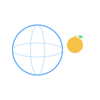
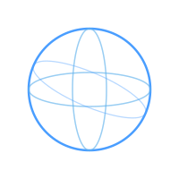
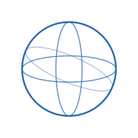
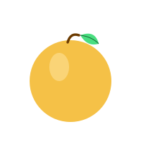
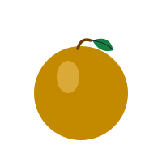

The shipped marks, rendered from the canonical SVG sources in this
directory. File names match docs/brand/. Each mark is shown on both
dark and light backgrounds; use the right variant for the surface.
Combined marks
Atlas AI · Combined mark
atlas_mark.svg

Use for: app header, ecosystem materials, anywhere Atlas and ErisML are presented together.
Atlas AI · Combined mark (light)
atlas_mark_light.svg
Use for: printed whitepapers, light-theme docs, pitch-deck slides on white.
Standalone — Atlas
Atlas · Sphere only
atlas_sphere.svg

Use for: Atlas dashboard favicon, any surface where Atlas stands alone without ErisML.
Atlas · Sphere only (light)
atlas_sphere_light.svg

Use for: Atlas on white backgrounds, printed materials.
Standalone — ErisML
ErisML · Apple only
erisml_apple.svg

Use for: ErisML library, Geometric Ethics book cover, ethics-framework repo READMEs.
ErisML · Apple only (light)
erisml_apple_light.svg

Use for: ErisML on white, print covers, pitch deck slides.
Combined mark — scale study
Graceful reduction at common sizes. Below 48 px the combined mark's
detail disappears — prefer the standalone sphere mark for tab /
favicon contexts.